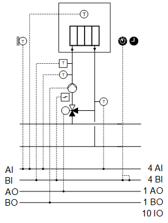
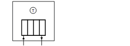
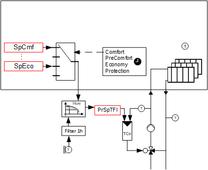

[HCr21] 加热回路、气候补偿流量温度控制、房间供暖
设备示例 HCr21 是一个散热器加热电路，具有外部空气温度控制的流量温度控制功能。
Functions
- Heating curve (implemented with function block HCRV)
- Heating limit
- Room influence
- Room frost protection
- Optimum start stop control (OSSC)
Plant diagram

Components
- Pump
- Valve
- Flow and return temperature sensors
- Sensor for outside temperature
- Room temperature sensor
设备示例的组件和功能：
成分 | 功能 | BACnet object |
|---|---|---|
| Scheduler program 将设备切换至运行模式：持续模式|经济|预舒适|舒适 | [MSchedule]Scheduler |
| Operating mode switch 将设备切换至：自动 |保护|舒适 | [MI]Operating mode switch |
| Manual operating mode selection 将设备切换至：自动 |持续模式|经济|预舒适|舒适 | [MCnfVal]Manual operating mode selection |
| Present operating mode 报告当前操作模式：持续模式 |经济|预舒适|舒适 | [MCalcVal] 当前操作模式 |
| Reason for present operating mode 报告当前操作模式的原因：异常 |低室温保护 |运行模式选择|加热极限| OSSC 模式 |供暖限制经济|调度程序 | [MCalcVal]Reason for present operating mode |
| Demand 报告热量产生需求：否|是的。 | [BCalcVal]Demand |
| Room temperature setpoints Determines the setpoint for the room temperature for each operating mode. | [ACnfVal]Setpoint for protection [ACnfVal]Setpoint for economy [ACnfVal] 预舒适的 Delta 设定点 [ACnfVal] 舒适度设定点 |
| Sensor for outside temperature 测量室外温度。 | [AI]Outside air temperature |
| Heating curve 使用功能块 HCRV 实现外部温度流温度控制。 |
|
 | Room temperature sensor 测量室温。 |
> [AI] 室温 |
Room frost protection 防止室温降至设定点以下以提供保护。 |
| |
Optimized switching 从经济或保护到舒适或预舒适的优化增压加热。 优化后退舒适性或预舒适性至经济性或保护性。 | [MCalcVal] 最佳启动停止控制 | |
Room influence 如果超过室温设定点，则校正加热曲线。 | [ACnfVal]Room influence factor | |
| Overtemperature detector 在高温下将混合阀切换为旁路并保持泵打开，例如 10 分钟。 然后工厂关闭。 | [BI]Overtemperature detector |
| Flow temperature sensor 测量流动温度。 | [AI] 流动温度 |
| Pump |
|
命令 根据需要打开/off 泵。 | > [BO] Command | |
故障信息 报告故障。 | > [BI] Fault | |
外部气温较低时泵运行 泵始终在较低的外部温度下运行（防冻）。 |
| |
反冲功能（泵反冲） 防止泵在长时间闲置期间卡住。 |
| |
| Return temperature sensor 测量回水温度。 | [AI]Return temperature |
| Mixing valve 混合返回到流动的所需量的水，以达到所需的流动温度。 |
|
温度控制器 控制流动温度。 | > [控制器]Temperature controller | |
定位 0% = Bypass … 100% = 直通端口 | > [AO] 位置 |


 Room functions (
Room functions (


设备示例 HCr21 是一个散热器加热电路，具有外部空气温度控制的流量温度控制功能。
Outside air temperature
外部温度 [TOa] 在未过滤和过滤的情况下使用。滤波产生两个不同的衰减信号。
信号名称 | 描述 | 滤波器常数 | 使用 |
|---|---|---|---|
|
TOa | 室外温度 | 未过滤 |
|
TOaEff | 有效室外气温 | 1h |
|
TOaBldg | 室外温度，严格过滤 | 50小时（建筑常数） |
|
Function heating limit
有两种加热限制功能可供选择。这里考虑了两种过滤后的外部温度。
- General heating limit (nested chart)
- The plant is enabled for Automatic mode (e.g. by the scheduler) if both filtered outside temperatures are below the value from [HtgLm]. The plant is not enabled for automatic mode if one of the two values exceeds the value from [HtgLm].
- Heating limit for operating mode Economy (nested chart)
- The plant is enabled for automatic mode in Economy if operating mode Economy is specified and both filtered outside temperatures are under the value from [HtgLmEco]. The plant is not enabled for Economy if one of the two values exceeds the value from [HtgLmEco].
BACnet objects
姓名 | 描述 | 对象类型 | 默认值 |
|---|---|---|---|
HtgLm | Heating limit | ACnfVal | 15 [°C] |
HtgLmEco | Heating limit for economy | ACnfVal | 8 [°C] |
Outside air temperature-dependent flow control

Key
|
SpCmf | Setpoint for comfort |
SpEco | Setpoint for economy |
Hcrv | Heating curve |
PrSpTFl | Present flow temperature setpoint |
TCtr | Temperature controller |
Heating curve
流动温度的设定点是使用加热曲线确定的。功能块 HCRV 实现加热曲线。
[HCRV] Heating curve
BACnet objects
姓名 | 描述 | 对象类型 | 默认值 |
|---|---|---|---|
TOaDsgn | Design outside temperature | ACnfVal | -11 [°C] |
SpTFlDs | Flow temperature setpoint for design outside temperature | ACnfVal | 60 [°C] |
TOaHi | Outside temperature high | ACnfVal | 15 [°C] |
SpTFlHi | Flow temperature setpoint for high outside temperature | ACnfVal | 30 [°C] |
PrSpTFl | Present flow temperature setpoint | ACnfVal | 45 [°C] |
调度程序 [MSchedule] 指定某种操作模式（舒适、预舒适、经济或保护）。相应地应用所需室温的设定值。
室温设定点被赋予加热曲线，并从 20 °C 的标称设定点内部减去。该差异被添加到有效室外温度中，以便根据所需的室温增加或减少流动温度设定点。
例如，经济运行模式下的设定值为 15 °C。这会导致与内部标称房间设定值相差 5K。该值被添加到有效室外温度中。这导致计算出的气流温度设定点与舒适性的对应气流温度设定点相比（在相同的有效室外温度下）向下移动。
Pre-Comfort 操作模式的设定值生成如下：
SpPcf = SpCmf - DSpPcf
BACnet objects
姓名 | 描述 | 对象类型 | 默认值 |
|---|---|---|---|
DSpPcf | Delta setpoint for pre-comfort | ACnfVal | 1 [K] |
SpCmf | Setpoint for comfort | ACnfVal | 21 [°C] |
SpEco | Setpoint for economy | ACnfVal | 15 [°C] |
SpPrt | Setpoint for protection | ACnfVal | 12 [°C] |
Vlv'TCtr | 温度控制器 控制流动温度。 | 控制器 | N/A |
温度控制器充当 PI 控制器（PID，微分作用时间 Tv=0），将温度设定点 [PrSpTFl] 与流量温度 [TFl] 进行比较，并计算输出上的阀门位置 [Pos]。 预设了以下控制器变量： | |||
如果必须减少工厂电力，例如热水充注期间，将温度控制器的输入端 [YCtrMax] 连接到限制信号，例如通过 BACnet。
Room functions
该设备示例的编程方式使得无需室温即可运行。
以下功能需要室温：
- Room frost protection
- Room temperature is monitored. The room setpoint for protection [SpPrt] applies as the limit value. If violated, the plant starts in operating mode Comfort. The plant continues to operate until the value for [SpPrt] and a hysteresis (e.g. 2K) is exceeded.
- This function has a higher priority than automatic mode, the manual selection and operating mode switch.
- Room influence
- The room temperature is subtracted from the present room setpoint, multiplied by the value from the room influence factor [RInflFac] and the result is added to the present room setpoint for the heating curve, which influences the calculated flow setpoint.
- The calculated flow temperature setpoint is corrected downward if the room setpoint is exceeded. The calculated temperature setpoint is increased if the room setpoint is not achieved.
- Optimum start stop control (OSSC)
- This functionality is implemented with function block OSSC.
[OSSC] Optimum start stop control
工厂运行模式：
- Protection (1)
- Economy (2)
- Pre-Comfort (3)
- Comfort (4)
操作模式在 [MCalcVal] 对象“当前操作模式”上报告。
同时，将当前操作模式的原因报告给另一个 [MCalcVal] 对象：
- Exception (1)
- Low room temperature protection (2), resulting from a room temperature that is too low
- Operating mode switch (3), resulting from an active (not equal to Auto) operating mode switch
- Manual operating mode selection (4), resulting from an active (not equal to Auto) manual operating mode selection
- Heating limit (5)
- OSSC mode (6)
- Heating limit Economy (7)
- Scheduler (8), resulting from an active scheduler

电站运行模式“保护”与运行模式“关闭”类似。如果温度控制和泵处于活动状态，则在“保护”中未启用温度控制和泵，并且功能块 SELMS_BO 上的引脚 [In1] 必须设置为 1。电站运行模式“保护”的响应与电站运行模式“开启”类似，但设定值降低。
[SELMS_BO] Multistate selector for boolean value
有正常模式和局部异常模式。
Normal operation
正常模式的来源：
- Room frost protection
- [MI] Operating mode switch
- [MCnfVal] Manual operating mode selection
- Optimum start/stop control
- Heating limit
- [MSchedule] Scheduler
在正常模式下，组件根据操作模式同时打开和关闭。
Exception mode
异常模式的来源：
- Pump fault
- Overtemperature detector
在例外模式下，所有输出均以优先级 5 直接关闭（混合阀切换至旁路），并且当前操作模式设置为“保护”。
Local exception mode (special case for overtemperature detector)
例如，如果触发过热检测器，泵将保持开启状态 10 分钟。然后关闭泵。输出 [AO] 阀门位置和 [BO] 泵命令以优先级 4 切换。
根据应用程序和安装，可能需要在程序中调整上述溢出。例如，对于地暖来说，它可能必须设置为 0。
Start-up control (nested chart SttUpAlmHdl)
以下功能可用于设备的自动启动，例如断电和恢复供电后：
- Fixed switch-on delay (can be set on input pin [DlySttUp])
- The plant remains off to ensure communications are reliable and cross-check references are triggered. 'Exception' is reported as the reason for the present operating mode.
- Automatic acknowledge (2x) of possible pending alarms during a fixed switch-on delay.
- Additional adjustable delay for staged plant ramp-up (can be set on input pin [DlyOn])
Alarm handling (nested chart SttUpAlmHdl)
工厂事件的状态通过 BACnet 对象“工厂状态”获取。状态映射到功能块 CMN_EVT 上。
[CMN_EVT] Common event
可以使用以下功能：
- Automatic acknowledge (2x) after startup
- Alarm acknowledgement with a value object
- Alarm indication:
- For pending alarms On
- For unprocessed alarms flashing - Ability to connect the acknowledge button [BI]
- Ability to connect to an alarm indication [BO], e.g. an alarm lamp through an output block [BO]
- Ability to connect to other alarm handling functions on other plants, e.g. acknowledge button and alarm indication for multiple plants in the same control cabinet
姓名 | 描述 | 类型 | Signal/connection | 状态文本 | 工程单位 |
|---|---|---|---|---|---|
OpModSwi | Operating mode switch | MI | N/A | 汽车 |保护|舒适 | N/A |
TOa | Outside temperature | AI | LG-Ni1000 | N/A | -70...70 [°C] |
TFl | 流动温度 报警功能：基本（通知等级 8） Limit high 90 [°C]; limit low 4 [°C] 时间偏差：30[s] | AI | LG-Ni1000 | N/A | 0...100 [°C] |
TRt | Return temperature 报警功能：基本（通知等级 8） Limit high 90 [°C]; limit low 4 [°C] 时间偏差：30[s] | AI | LG-Ni1000 | N/A | 0...100 [°C] |
OvrTDet | Overtemperature detector 报警功能：基本（通知等级 8） 参考值：Tripped 时间偏差：0[s] | BI | NO contact | Normal | Tripped | N/A |
Vlv-位置 | 阀门位置 | AO | 0...10V | N/A | 0...100 [%] |
普命令 | 泵命令 | BO | NO contact | 关闭 |在 | N/A |
普福尔特 | 泵故障 报警功能：扩展（通知等级 7） 参考值：Tripped 时间偏差：0[s] | BI | NO contact | Normal | Tripped | N/A |
TR | 室温 | AI | LG-Ni1000 | N/A | 0...50 [°C] |